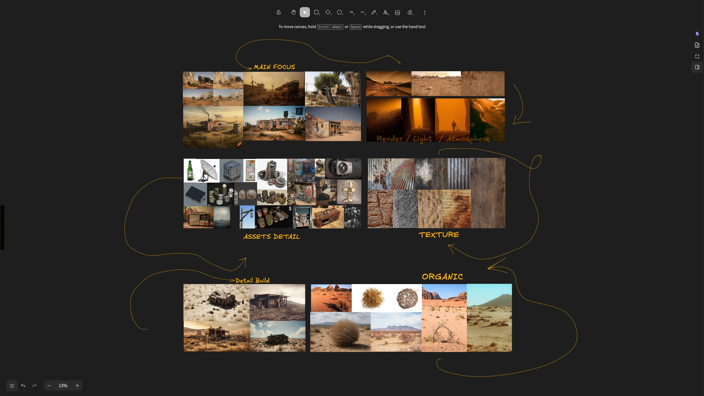

Reference.
The project starts with gathering references, real-world desert outposts, terrain silhouettes, material samples and lighting moods. Boards are organized by Main Focus, Landscape, Render, Light, Atmosphere, Assets Detail, Texture and Organic elements to define the visual direction before modeling begins.
